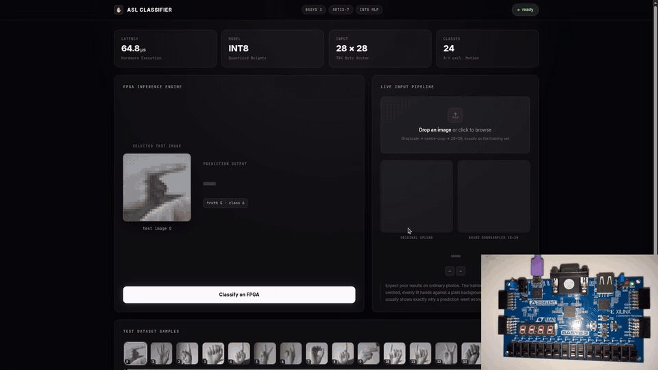

Neural Network Inference Accelerator
A 24-class ASL hand-sign classifier trained in PyTorch, then quantized and rebuilt as hardware — inference runs entirely on FPGA fabric at 100 MHz with no CPU and no external memory.

Stack
The build
- Trained a 784→128→24 classifier in PyTorch, then built the accelerator to run that same network on-chip — weights live in block RAM, so nothing leaves the fabric at inference time
- Wrote an end-to-end Python quantization toolchain that computes per-layer scale factors, converts FP32 weights to INT8 using power-of-two shifts so rescaling reduces to a bit shift in hardware, and emits the memory initialization files the RTL loads
- Built a cycle-accurate Python golden model and a self-checking test harness that proved the implementation bit-exact against it, which caught quantization and overflow defects before anything reached the board
- Extending verification with SystemVerilog assertions discharged formally in SymbiYosys — proving accumulator overflow cannot occur for any legal input sequence, and that the datapath handshake is deadlock-free
- A browser dashboard drives the board over serial — pick a test image or drop in a photo, which is converted to grayscale, centre-cropped and downsampled to 28×28 to match the training distribution
- Every prediction is checked against a software reference model running the same quantized weights, so a hardware/software mismatch is immediately visible
Results
| Accuracy, FP32 baseline | 93% |
|---|---|
| Accuracy, INT8 on hardware | ~92% |
| Inference latency | 64.8 μs |
| Clock | 100 MHz |
| Input | 28 × 28, 784-byte vector |
| Classes | 24, A–Z excluding motion letters |
| External memory | None |
| Softcore CPU | None |
Honest state of the project
The first version of this RTL was written with heavy AI assistance. It runs on the board and the numbers are real, but I am rebuilding the datapath by hand — accumulator sizing, quantization scaling and the control FSM — so that I can defend every line of it. I would rather say that plainly than be caught out on it in a whiteboard session.
The MLP was the right first target for learning the toolchain, but the interesting hardware problem is a systolic or tiled MAC array with proper weight reuse. That's the next build.